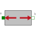
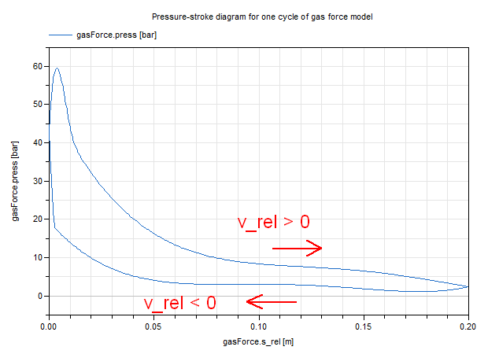

GasForce2Rough approximation of gas force in a combustion engine's cylinder |

|
Information
This information is part of the Modelica Standard Library maintained by the Modelica Association.
The gas force in a cylinder of a combustion engine is computed as function of the relative distance of the two flanges. It is required that s_rel = flange_b.s - flange_a.s is in the range
0 ≤ s_rel ≤ L,
where the parameter L is the length of the cylinder. If this assumption is not fulfilled, an error occurs. The resulting approximation of the gas pressure is shown in the following figure and depends on both s_rel and the relative velocity v_rel = der(s_rel).

Parameters (5)
| L |
Value: Type: Length (m) Description: Length of cylinder |
|---|---|
| d |
Value: Type: Length (m) Description: Diameter of cylinder |
| k0 |
Value: 0.01 Type: Volume (m³) Description: Volume V = k0 + k1*(1-x), with x = 1 - s_rel/L |
| k1 |
Value: 1 Type: Volume (m³) Description: Volume V = k0 + k1*(1-x), with x = 1 - s_rel/L |
| k |
Value: 1 Type: HeatCapacity (J/K) Description: Gas constant (p*V = k*T) |
Connectors (2)
Used in Components (3)
|
Modelica.Mechanics.MultiBody.Examples.Loops.Utilities Cylinder with rod and crank of a combustion engine |
|
|
Modelica.Mechanics.MultiBody.Examples.Loops.Utilities One cylinder with analytic handling of kinematic loop |
|
|
Modelica.Mechanics.MultiBody.Examples.Loops.Utilities Model of one cylinder engine with gas force |